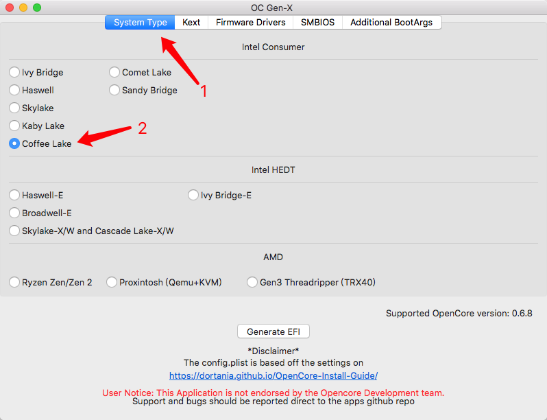
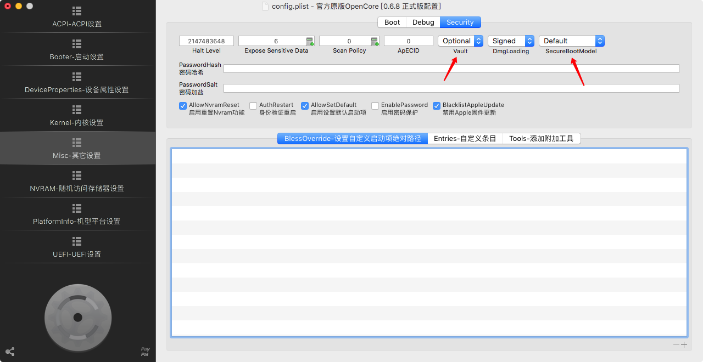

前言
目前，OpenCore Bootloader已经开发了相当一段时间，已经趋近于稳定。OpenCore的启动方式更接近于原生macOS电脑，对系统的注入更少，越来越多的驱动都基于OpenCore适配开发。因此，将Bootloader从Clover迁移到OpenCore也是时候提上日程了。以下博客记录了我的迁移过程，并向大家分享一下我的迁移方法。不同于网上的纯ProperTree手动配置、纯OpenCore Configurator图形配置或OC Gen-X直接生成，我同时用到了以上三种工具，节省了迁移成本的同时，也避免遇到了很多错误。
硬件信息
首先介绍的是我的硬件信息，如下表所示。
| 硬件类型 | 型号 |
|---|---|
| 主板 | Asus Rog Strix B360-i Mini ITX |
| 处理器 | Intel Core i5-8500 |
| 内存 | Crucial By Micron DDR4 2666MHz 8GB + Corsair LPX DDR4 3000MHz 8GB(运行在2666MHz) |
| 显卡 | Nvidia GeForce GTX 1060 3GB |
| 硬盘 | Asgard AN2 NVMe 250GB |
| 网卡 | 板载Intel AC 9560 |
工具准备
整个配置的过程需要用到以下的工具包，均可以从GitHub下载，注意工具对应的OC版本需要一致，否则极大概率会出错。
- OpenCore（版本0.6.8正式版），地址在这里
- OC Gen-X（版本3.0.2），地址在这里
- OpenCore Configurator（版本2.33.1.2），GitHub地址在这里，软件下载地址在这里
将OpenCore解压，安装OC Gen-X，安装OpenCore Configurator。至此，工具的准备工作完成。
生成配置文件
首先我们需要准备一份适合本机配置的配置文件，如果使用OCC或ProperTree纯手动配置的话，需要手动填入很多参数，费时又容易出错。因此我们使用OC Gen-X直接生成一份简单的配置文件，然后再基于这份配置文件进行修改。
打开OC Gen-X，首先确认系统架构。因为我使用的是第八代酷睿，因此在System Type选择Intel Consumer的Coffee Lake。

接下来在Kext中进行如下列表的勾选，图比较多我就只放Essential中的一张了
- Essential，勾选：Lilu和VirtualSMC
- VirtualSMC Plugins，勾选：SMCProcessor、SMCSuperIO和SMCLightSensor
- Graphics，勾选：WhateverGreen（Boot Args留空），AGPMInjector（显卡节能用，选择你目前的仿冒型号和GPU，我的选择是
iMac18,2和GTX1060） - Audio，勾选：AppleALC（Boot Args留空）
- Ethernet，勾选：IntelMausi
- USB，勾选：USBInjectALL
- WI-FI and Bluetooth，无需勾选，稍后手动添加驱动
- Extra’s，无需勾选，里面的驱动是给AMD CPU使用的

接下来在Firmware Drivers中，在UEFI中勾选OpenRuntime.efi和HfsPlus.efi。
最后在SMBIOS中，OC Gen-X会自动填入当前系统的SMBIOS信息，不需要去修改了。在Additional BootArgs中也不需要填入任何参数，稍后用OCC手动填入即可。
点击下方Generate EFI，就会在你的桌面生成一个EFI文件夹，此时可以关闭OC Gen-X了，接下来的操作就是修改这个EFI的配置。
添加固件、驱动、主题
OC Gen-X生成的EFI文件并不是立即就能使用的，还需要根据自己的需要进行修改，以下是我的修改过程。
首先打开EFI/OC/Drivers，可以看到里面只有刚刚勾选添加的2个固件，缺少了其他固件，OC是启动不起来的，因此需要添加OpenCore官方包中的固件。打开OpenCore官方EFI（准备阶段中下载解压的）中的OpenCore-0.6.8-RELEASE/X64/EFI/OC/Drivers，可以看到里面有很多OC的启动固件，把这些固件全部复制到Gen-X生成的EFI中。
接下来打开EFI/OC/Kexts，可以看到文件夹中已经添加了我们刚刚在Gen-X中勾选的驱动。但每个人的配置都不同，还需要根据自己的配置添加对应的驱动。对于我的配置来说，我还需要添加的驱动和作用在以下列表中。
- AirportItlwm.kext，Intel AC 9560网卡驱动，这个Airport版本支持原生Airdrop
- CPUFriend.kext，CPU变频补丁驱动，添加后有低频档位
- HibernationFixup.kext，睡眠修复补丁，目前发现添加与否并不影响睡眠，先加了再说
- IntelBluetoothFirmware.kext，Intel AC 9560蓝牙驱动
- IntelBluetoothInjector.kext，修复系统蓝牙开关为灰色的补丁
- NVMeFix.kext，NVME固态硬盘兼容性提升驱动
添加完驱动后的Kexts文件夹如下图所示。
（可选）最后可以根据需要添加Bootloader的主题，如果没有主题，OpenCore的启动界面是纯文字的，也不是不能用。但是为了好看，我还是弄了一套官方的主题。
从GitHub拉取OcBinaryData仓库，地址在这里。因为我不需要开机声音，所以我把拉取后把仓库中的Resources/Audio下的音频文件全部删除了。
最后，把整个Resources文件夹替换掉EFI/OC/中的Resources文件夹即可。
至此，EFI中的固件、驱动、主题文件准备完毕，接下来就是对配置文件进行修改。
修改配置文件
在修改配置文件之前，我们需要准备一个有EFI分区的U盘，最好是以前配置Clover时留下来的一个备份。挂载这个U盘的EFI分区，将里面的EFI文件替换，然后就可以开始配置文件的修改了。
使用OpenCore Configurator打开U盘EFI/OC中的config.plist，开始配置文件的修改。
首先是ACPI-ACPI设置，这里需要根据机型的不同添加对应的SSDT文件，在右侧列表框的下方点击下载/更新Acpi文件，对于我的配置，我需要下载以下SSDT文件：
- SSDT-AWAC
- SSDT-EC-USBX-DESKTOP
- SSDT-PLUG-DRTNIA
- SSDT-PMC
点击下载后，就可以关闭ACPI补丁下载器了，然后点击快照添加，刚刚下载的SSDT配置文件就会自动添加并启用，配置完成后的ACPI设置界面如下。
接下来的Booter-启动设置，不需要修改里面的任何选项，直接跳过。
接下来的DeviceProperties-设备属性设置，如果想开启核显加速，就需要在里面添加核显设备。点击左侧设备列表的加号，在新添加的空白栏中填入PciRoot(0x0)/Pci(0x2,0x0)，然后点击右侧表格下方的加号，在新添加的空白栏中的键填入AAPL,ig-platform-id，在值中填入0300983E，不同CPU，不同核显和不同的加速效果有着不同的值，这个值需要在网上查询自己核显的ig-platform-id，添加后的效果如下。
接下来的Kernel-内核设置，需要在添加页面加入自己需要启用的驱动，打开EFI/OC/Kexts，拖动自己添加的驱动到列表中，启用即可。这里需要注意调整启动顺序，自己添加驱动启动顺序最好放在最后面。添加后的效果如下。
在Kernel-内核设置中，还需要添加的是RTC修复的补丁，否则每次重启开机BIOS都会进入安全模式，具体原因在xjn的博客中有详细描述，想了解更多的点这里。点击补丁，在表格右下角点2次加号，添加两个补丁条目。在两个条目中，标识符均填入com.apple.driver.AppleRTC，替换次数均填入1，均勾选启用。在第一个条目中的查找中填入752E0FB6，在第一个条目中的替换中填入EB2E0FB6。在第二个条目中的查找中填入75330FB7，在第二个条目中的替换中填入EB330FB7，最小内核和最大内核填入18.5.0（网上也有解决方法是不需要填入内核参数的，但我并没有进行测试，有兴趣的朋友可以测试一下）。填完后的效果如下。
接下来是Misc-其他设置，如果在上一节中添加了主题文件并且想启用，在Boot页的设置中需要把Picker Mode启动界面模式修改为External，如果想隐藏多余的启动项（例如：恢复分区、Reset NVRAM等），可以勾选HideAuxiliary，修改后的效果如下。
在Misc-其他设置中，还需要修改启动的安全选项，在Security页中，将Vault参数改为Optional，如果使用AirportItlwn驱动，还需要将SecureBootMode参数修改为Default，这个参数会导致开机速度变慢，但为了使用Intel原生Wi-Fi驱动，也是没办法的事情，修改后的效果如下。

接下来是NVRAM-随机访问储存器设置，我们需要修改启动参数，不同配置的机型启动参数可能不同。点击左侧UUID表中的7C436110-AB2A-4BBB-A880-FE41995C9F82，在右侧boot-args中把默认的值删掉，填入-v debug=0x100 keepsyms=1 nvda_drv=1 alcid=7，下面是参数含义解释。
- -v，开启debug模式，测试无问题后可删去
- debug=0x100，在启动遇到问题后不自动关机，而是停止操作，方便观察debug log
- keepsyms=1，输出更多的debug信息，方便调试
- nvda_drv=1，启用NVIDIA驱动，N卡独显需要使用
- alcid=7，声卡ID注入，我的板载声卡注入ID为7
配置完成后的效果如下。
接下来是PlatformInfo-机型平台设置，由于Gen-x在生成配置文件时已经自动填入机型信息，这一页不需要再手动配置了。
最后是UEFI-UEFI设置，如果要开启OC的主题，还需要添加UEFI驱动。点击UEFI驱动页面，点击浏览，将EFI/OC/Drivers中的OpenCanopy.efi添加到表格中，添加后效果如下。
至此，OC的启动配置文件修改完成，按command + s保存配置，就可以开始重启，使用OC尝试引导系统了。
清除Clover残余
如果使用OC能够成功引导系统，并且使用一段时间后没有任何问题，就可以将硬盘上的Clover EFI替换为OpenCore EFI了。替换的操作也是一样的，将整个EFI文件夹替换即可，最后在Terminal中执行以下代码，清除Clover残留文件即可完成迁移。
1 | # 删除 Clover 位于系统偏好设置中的面板 |
在迁移到OC后，最好再重置一次NVRAM，重置完后系统就完全是由OC来引导启动了，接下来就开启愉快的OC之旅了。